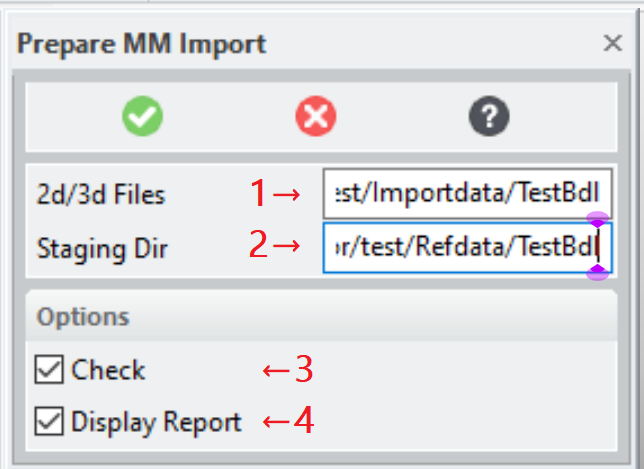
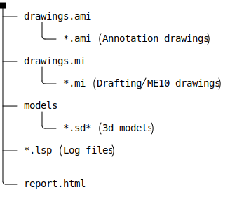
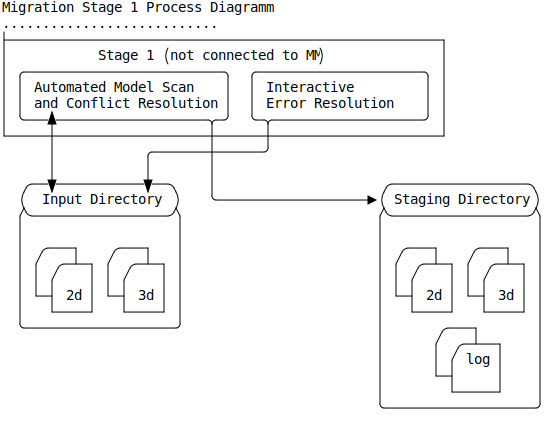
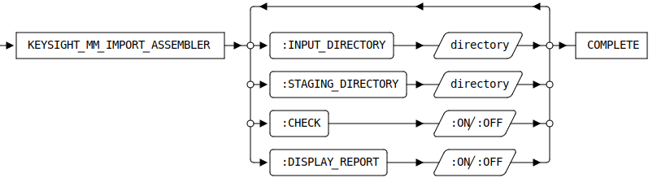

KEYSIGHT_MM_IMPORT_ASSEMBLER [Public Dialog]
Package: keysight-migrator (Nick name(s): :kym)
Stage Modeling 2d and 3d models for ModelManager check-in.
This dialog can be activated by:
- Selecting the command Prepare MM Import in the Keysight Migrator group of the Modeling ribbon (see also The Extension Module User Interface
- Typing
KEYSIGHT_MM_IMPORT_ASSEMBLERinto the Modeling command line.
Dialog

Location of the input directory containing 2d/3d data for check-in:
- 3d Models (*.sd?; *.sd?c; *.xmit (ME30); *.bdl; *.pkg; *.sdexp)
- Annotation or plain ME10 drawings (*.mi; *.ami).
The sub-structure is up to the user but it is recommended to keep related files together in sub-directories.
The 2d/3d models staged for ModelManager import.
- 3d models are staged in the 'models' sub-directory. Filenames in this sub-directory are component sysids to guarantee uniqueness.
- Annotation drawings are staged in the
drawings.amisub-directory. - Plain ME10(Drafting drawings are staged in the
drawings.misub-directory. - Various log files (*.lsp) are generated in the staging directory:
toc.lsp- Records of typecad-fileinfodescribing the files loaded and staged for ModelManager check-in-ami-drawings.lsp- Records of typeami-drawing-infodescribing the relationship of Annotation drawings with the 3d model.components.lsp- Records of typeinstance-infoandcontents-infodescribing the structure components of the models loaded for processing.analytics.lsp- Records of type [model-status] and [ami-drawing-status] decribing the associations between 3d and 2d model and also a quality (part check) assessment of the 3d model.
- A human-readable report file
report.htmgenerated in the staging directory. The report is generated from the information available in the log files.
The structure diagram of this directory is:

Description
This dialog implements stage 1 of the migration process. For stage 1 ModelManager is not is not required nor is any specific knowledge about ModelManager

All models and drawings contained in the Input Directory are loaded into
Modeling to perform specific actions:
- Drawings:
- Determine the drawing type (Annotation or ME10).
- Log drawing owners for Annotation drawings.
- Copy Annotation to
drawings.amiin theStaging Directory - Copy Drafting (ME10) to
drawings.amiin theStaging Directory
- 3d Models
- Reintegrate versioned parts
- Mark simplified objects as untouchable and delete the simplifiication feature.
- Mark PC Board Assemblies as untouchable and delete any contained coordinate systems.
- Run a part-check.
- Resolve SYSID conflicts (by assigning new sysids to convert sysid conflicts into model name conflicts).
- Save each loaded model (top-level instance) to
modelsin theStaging Directory
- Finally, if option
DISPLAY_REPORTis active a report is displayed in the default browser.
Syntax

Options
:INPUT_DIRECTORY- The input directory containing 2d Annotation and MI drawings (*.mi; .ami) as well as 3d models of any format supported by Modeling (.sd?; *.sd?c; *.xmit (ME30); *.bdl; *.pkg; *.sdexp).
:STAGING_DIRECTORY-
3d models and drawings The models in native Modeling format (.sd*; *.ami: .mi) and log files (.lsp) to pass check-in information to the stage 2 dialog
KEYSIGHT_MM_ASSISTED_CHECKIN.Filenames in the
modelssub-directory are component sysids to guarantee uniqueness. :CHECK- Option to run a part check on all parts.
:DISPLAY_REPORT-
Show a report when all models are staged.